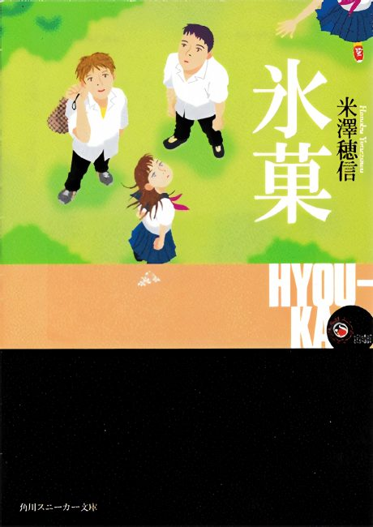

Animeter
 Anime
Anime
Light novel2012 · Mystery, Romance, Slice of Life
Hyouka
氷菓
AniList7.9
Animeter—
Episodes22 ep
SourceVol. 5
Anime finished. Where does the story go next?
Start at Volume5
The anime adapts roughly the first four novel volumes, so continue with volume 5 (It Walks by Past). The anime also reorders some short stories.
14ongoing
Season 1Start reading here